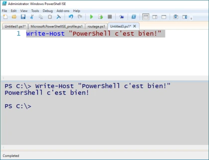
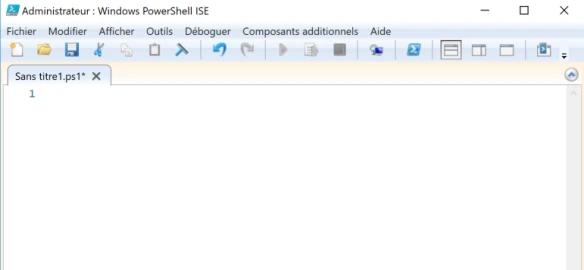
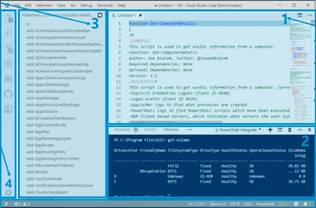
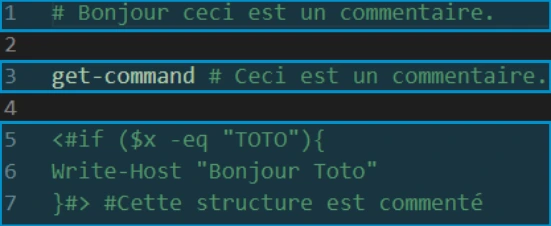
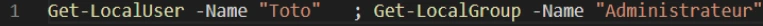
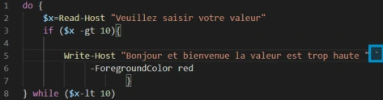
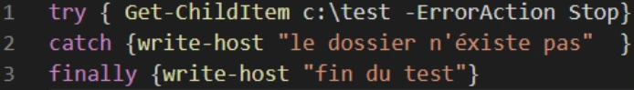
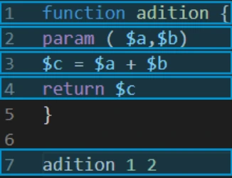

Transcription du support du Drive. Les formulations historiques et les exemples du document sont conservés. Les valeurs d’accès du laboratoire sont indiquées comme « fourni par le formateur ». Les adresses de messagerie personnelles utilisent example.com.
Module 05 – Réalisation d’un script
Préparer son script avant de l’écrire, c’est tout sauf une perte de temps !
ISE : Integrated Scripting Environment

IntelliSense : complétion graphique Permet de rechercher et utiliser des paramètres plus rapidement
Coloration syntaxique
Snippets : syntaxe des structures de scripting
Détection des erreurs en temps réel

1
3
3 – Extension PowerShell
1 – Environnement de travail
4 – Navigation
2
2 – Console interactive
5 – Infos et notifications
4
5

1 – Commentaire simple
3 – Commentaire après une commande
5 – 7 Il est possible de commenter une
structure ou un ensemble de lignes
en utilisant les chevrons et le dièze.

Lors de la réalisation d’un script, il est utile de pouvoir enchaîner plusieurs commandes sur une seule ligne du script.
Le « Backtick » ou « Anti-Quotte »
s’obtient avec « Alt Gr », « 7 »
puis « espace ».


Il est possible pour une commande ciblée, à son lancement, de redéfinir le nom de la variable qui consignera ses erreurs
PS > Get-ChildItem C:\Dossier –ErrorVariable ErreursValeurs pouvant être affectées à la variable $ErrorActionPreference
et au paramètre –ErrorActionValeur Comportement résultant
Continue Affiche l’erreur mais continue (niveau par défaut)
Ignore Ignore l’erreur (celle-ci n’est pas stockée dans la variable d’erreur)
Inquire Interaction avec l’utilisateur pour savoir l’action a réaliser
SilentlyContinue Ignore l’erreur mais la consigne dans la variable d’erreur
Stop Arrêt de la commande
Suspend Suspend le workflow en cours
Couramment appelée Try Catch, la structure Try Catch Finally permet de gérer efficacement les erreurs.
L’avantage est qu’en cas de dossier non présent, le script continue son exécution sans arrêter la totalité du script.
| Valeur | Comportement résultant |
| Continue | Affichel’erreurmaiscontinue(niveaupardéfaut) |
| Ignore | Ignore l’erreur (celle-ci n’est pas stockée dans la variable d’erreur) |
| Inquire | Interactionavecl’utilisateurpoursavoirl’actionaréaliser |
| SilentlyContinue | Ignorel’erreurmaislaconsignedanslavariabled’erreur |
| Stop | Arrêtdelacommande |
| Suspend | Suspendleworkflowencours |

Donner des noms explicites à vos fonctions !
PS > Function NomDeLaFonction {
Code à intégrer dans la fonction
}Une fonction est appelée comme une commande.
PS > NomDeLaFonctionfunction adition {
param ($a,$b)
$c = $a + $b
return $c
}
adition 1 2
Param(Option permettant de rendre
le paramètre obligatoire
[Parameter(Mandatory=$True)]
[String]$Monparametre
)Nom du paramètre
Le paramètre utilisera uniquement des chaînes
de caractères
PS > ./Monscript.ps1 –Monparametre toto
PS > Ma-Fonction –Monparametre totoPS > Enter-PSSession -Computername DC01
PS [DC01] >PS > Exit-PSSessionÀ l’issue de la commande de sortie, la session existe toujours.
PS > $Session = New-PSSession -Computername DC01
PS > Disconnect-PSSession -Session $Session
PS > Get-PSSession -Computername DC01
PS > Get-PSSession -Computername DC01 | Connect-PSSession
PS > $Session
PS > Get-PSSession | Remove-PSSessionIl n’est, par défaut, pas possible d’utiliser une machine pour faire un « rebond » sur une autre avec les PSSessions.
1 2
On peut importer des modules d’une session distante pour utiliser ses commandes dans la session locale. Cela permet de limiter l’installation de modules sur le parc.
PS > $Session = Enter-PSSession -Computername DC01
PS > Get-Module -PSSession $Session -ListAvailable
PS > Import-Module -PSSession $Session –name ActiveDirectory –Prefix DC
PS > Help Get-DCADUser
PS > Get-DCADUser –Filter *PS > Invoke-Command -Computername DC01,SRV01 –ScriptBlock {
Get-Process PowerShell* }$Process = ‘’Powershell*’’
PS > Invoke-Command -Computername DC01,SRV01 –ScriptBlock {
Get-Process $Using:Process}